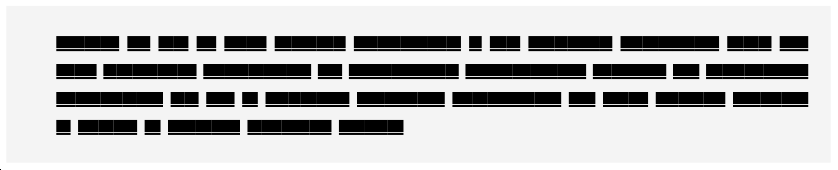
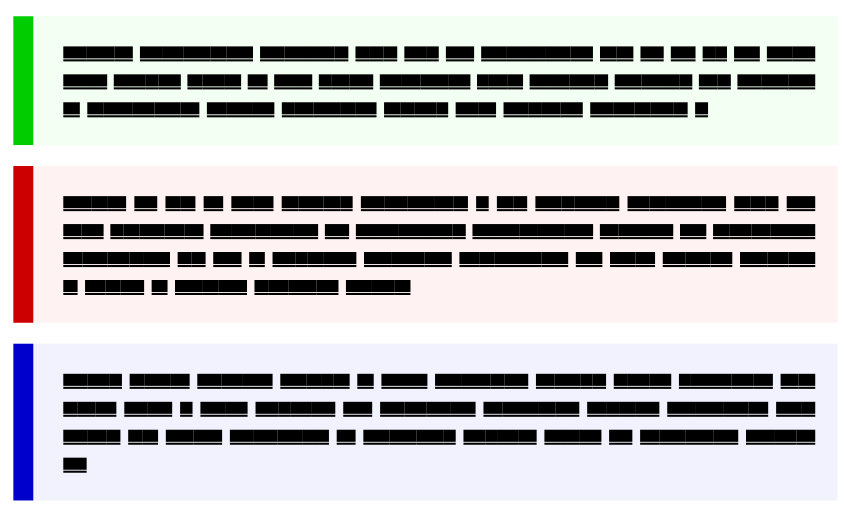

Frame With Solid Left Line Redux
Posted on March 24, 2019
As I had posted earlier, I like the visual effect of placing a solid line on the left side of a block:

I use this for displaying short code snippets in the lecture notes of a course
that I teach. Typically these are a few lines of Matlab code but recently I
needed to post a bigger code snippet where the frame should break across the
page. In principle, this should have been a simple change—replace the framed
with a textbackground—but that did not work out of the box. This blog post
explains a simple solution.
First, let’s start with the naive solution:
\definecolor[darkgray] [s=0.5]
\definecolor[lightgray] [s=0.95]
\definetextbackground
[leftbartext]
[
location=paragraph,
frame=on,
framecolor=darkgray,
rulethickness=2ex,
leftoffset=5.25ex,
rightoffset=2.25ex,
topoffset=2.25ex,
bottomoffset=2.25ex,
background=color,
backgroundcolor=lightgray,
]
Frame and textbackground handle the offsets differently. Frame adds the
rulethickness to the offset, while textbackground does not. So, I have
manually set the offset in each direction. The above code gives the following
output:
So far, so good. So, all that we need is to replace frame=on with
frame=off, leftframe=on. Unfortunately, that does not work.
\definetextbackground
[leftbartext]
[
...
frame=off,
leftframe=on,
...
]
gives
Notice that the output has no frame! To understand why this happens, we need
to dig a bit into how textbackgrounds work. Most of the heavy lifting for
drawing the background is done by Metapost. The default setting of
textbackground has (in
anch-bck.mkvi
\setuptextbackground
[
...
mp=mpos:region:draw,
...
]
where mpos:region:draw is defined as
\startuseMPgraphic{mpos:region:draw}
draw_multi_pars
\stopuseMPgraphic
which simply calls draw_multi_pars defined in
mp-abck.mpiv. The reason that we don’t get anything when frame=off is because draw_multi_pars does not include the code to selectively draw the boundary. mp-abck.mpiv also includes another macro called draw_multi_side to draw only the left boundary. So, we can define the left-bar textbackground as follows:
\definetextbackground
[leftbartext]
[
..
mp=mpos:region:leftbar,
frame=off,
..
]
\startuseMPgraphic{mpos:region:leftbar}
draw_multi_pars;
draw_multi_side;
\stopuseMPgraphic
We don’t need to specify leftframe=on because draw_multi_side only draws
the leftframe. To conclude, here is the complete code:
\definetextbackground
[leftbartext]
[
location=paragraph,
mp=mpos:region:leftbar,
width=broad,
frame=off,
framecolor=darkgray,
rulethickness=2ex,
leftoffset=5ex,
rightoffset=2.25ex,
topoffset=2.25ex,
bottomoffset=2.25ex,
background=color,
backgroundcolor=lightgray,
]
\startuseMPgraphic{mpos:region:leftbar}
draw_multi_pars;
draw_multi_side;
\stopuseMPgraphic
As in the case of the definition using framedtext, it is straight forward to
inherit from leftbartext text background to get backgrounds with different
color:
\definecolor[lightred] [0.95(red,white)]
\definecolor[lightgreen] [0.95(green,white)]
\definecolor[lightblue] [0.95(blue,white)]
\definetextbackground
[exampletext]
[leftbartext]
[
framecolor=darkgreen,
backgroundcolor=lightgreen,
]
\definetextbackground
[alerttext]
[leftbartext]
[
framecolor=darkred,
backgroundcolor=lightred,
]
\definetextbackground
[blocktext]
[leftbartext]
[
framecolor=darkblue,
backgroundcolor=lightblue,
]
which gives
This entry was posted in Visualization and tagged backgrounds, framed.